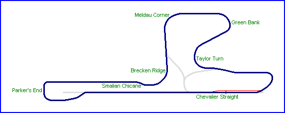
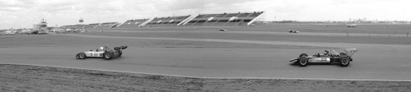

Looking back down to Parker's End from the entry of the Smalian Chicane. This photograph was taken during an early 70's Formula B race
Edmonton - Parker's End to Meldau Corner
|| Contents | Chevalier Straight and Pit Complex | Parker's End to Meldau | Green Bank to Pit Entrance || Home ||

Return to racingcircuits.net's Photo
Archive Main Index
Looking back down to Parker's End from the entry of the Smalian Chicane. This photograph
was taken during an early 70's Formula B
race

Panoramic view from Brecken Ridge, looking towards the grandstands alongside the Chevalier
Straight

Entry to Meldau Corner
All photographs ©Fred Young. Reproduced here with kind permission.